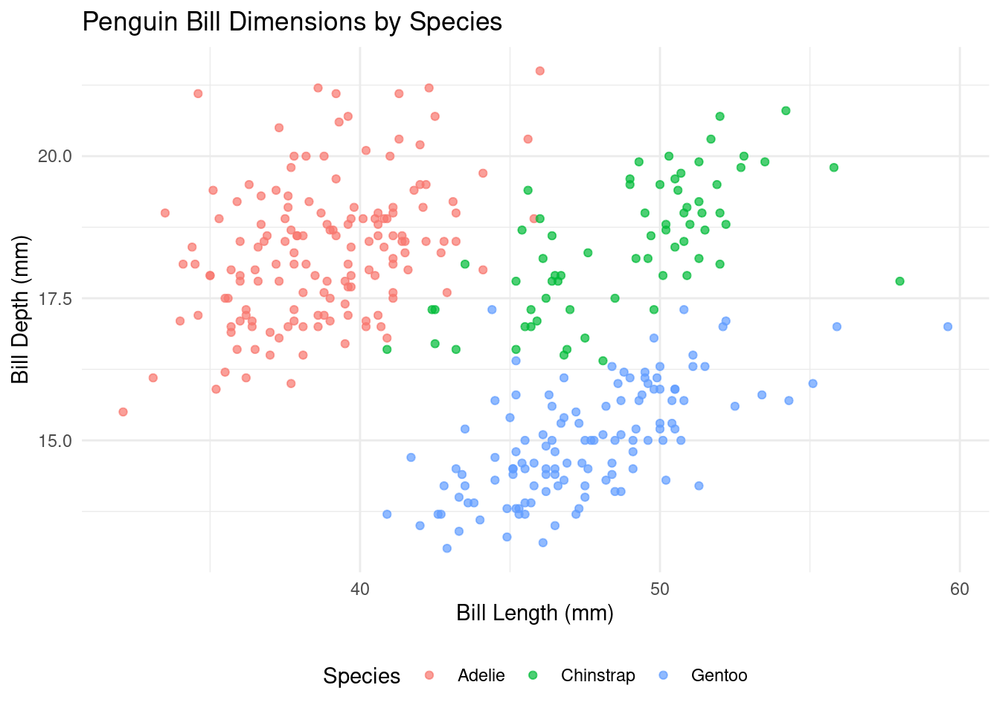
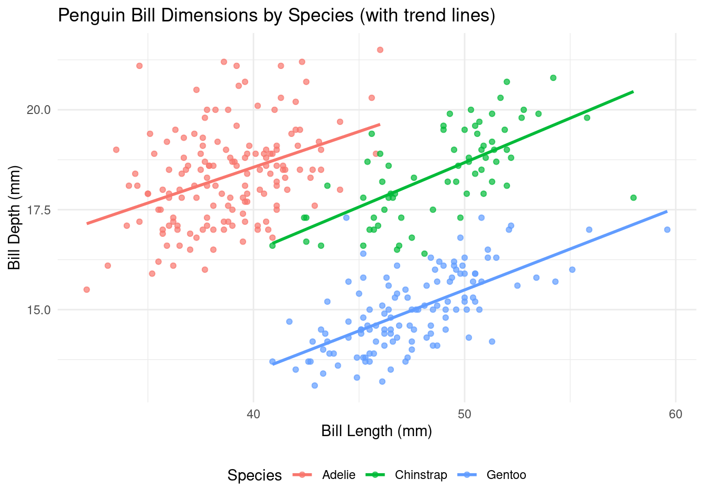

Exploring penguin size measurements across species
Published
January 15, 2025
Introduction
This week’s Tidy Tuesday featured the Palmer Penguins dataset, which includes size measurements for three penguin species observed on three islands in the Palmer Archipelago, Antarctica.
Initial Data Exploration
Let’s look at the first few rows of the dataset:
# Using kable for better table formattinghead(df) %>%kable() %>%kable_styling(bootstrap_options =c("striped", "hover", "condensed"), full_width =FALSE)
Species
Island
Bill Length (mm)
Bill Depth (mm)
Flipper Length (mm)
Body Mass (g)
Sex
Year
Adelie
Torgersen
39.1
18.7
181
3750
male
2007
Adelie
Torgersen
39.5
17.4
186
3800
female
2007
Adelie
Torgersen
40.3
18.0
195
3250
female
2007
Adelie
Torgersen
NA
NA
NA
NA
NA
2007
Adelie
Torgersen
36.7
19.3
193
3450
female
2007
Adelie
Torgersen
39.3
20.6
190
3650
male
2007
Key Variables
The dataset includes several key measurements: - Bill length (mm) - Bill depth (mm) - Flipper length (mm) - Body mass (g)
Visualizing Penguin Bill Dimensions
Let’s create a scatter plot showing the relationship between bill length and bill depth, colored by species:
ggplot(df, aes(x =`Bill Length (mm)`, y =`Bill Depth (mm)`, color = Species)) +geom_point(alpha =0.7) +labs(title ="Penguin Bill Dimensions by Species",x ="Bill Length (mm)",y ="Bill Depth (mm)") +theme_minimal() +theme(legend.position ="bottom")

Enhanced Visualization
Here’s an enhanced version with trend lines to better visualize the relationship:
ggplot(df, aes(x =`Bill Length (mm)`, y =`Bill Depth (mm)`, color = Species)) +geom_point(alpha =0.7) +geom_smooth(method ="lm", se =FALSE) +labs(title ="Penguin Bill Dimensions by Species (with trend lines)",x ="Bill Length (mm)",y ="Bill Depth (mm)") +theme_minimal() +theme(legend.position ="bottom")

Exploring Species Distribution by Island
Let’s look at how the penguin species are distributed across the islands:
# Create a summary table of species by islandspecies_by_island <- df %>%count(Species, Island) %>%spread(Island, n, fill =0)# Display as a nicely formatted tablespecies_by_island %>%kable(caption ="Penguin Species Distribution by Island") %>%kable_styling(bootstrap_options =c("striped", "hover", "condensed"), full_width =FALSE)
Penguin Species Distribution by Island
Species
Biscoe
Dream
Torgersen
Adelie
44
56
52
Chinstrap
0
68
0
Gentoo
124
0
0
Conclusion
This exploration demonstrates how simple visualizations can reveal clear patterns in biological data. The distinct clustering of penguin species based on bill dimensions shows how these measurements can be used for species identification.